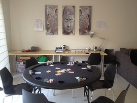
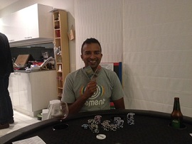

.....and still they came back for more.
| Date | Location | Game | Players |
|---|---|---|---|
| 11/05/2013 | Brian's | 1st | 6 |
| Date | Location | Game | Players |
|---|---|---|---|
| 11/05/2013 | Brian's | 2nd | 6 |
| Position | Name | Points |
|---|---|---|
| {{$index + 1}}{{positionSuffix($index + 1)}} | {{result.forename}} {{result.surname}} | {{result.points}} |
| Position | Name | Points |
|---|---|---|
| {{$index + 1}}{{positionSuffix($index + 1)}} | {{result.forename}} {{result.surname}} | {{result.points}} |
| Position | Name | Played | Won | Average | Points |
|---|---|---|---|---|---|
| {{$index + 1}}{{positionSuffix($index + 1)}} | {{result.forename}} {{result.surname}} | {{result.played}} | {{result.won}} | {{result.average}} | {{result.points}} |
 The second poker tournament had 6 players (5 returning players from the first game and a newcomer Mark V)  jostling it out for the points at Brian's.
The first game was a little tentative in the betting as people reminded themselves of the rules and blind levels, but still saw some interesting hands with full houses again losing out to higher full houses. Jade was having no luck with pocket sixes on two occasions, after being drawn out to higher hands on the river card.
Mark studiously studied the winning hand sheets, which seemed to be working as he started to build a sizeable stack, whilst others struggled to keep up. A large all-in bet from Brian forced Steve to fold keeping Brian's stack increasing as Steve's diminished, whilst Ben played out some good hands, raking in numerous chips to keep his stack healthy. Meanwhile Paul was ruing missed opportunities from folding early against lots of aggressive pre-flop betting, as his hands would have taken the pot had he have stayed in.
Into round five, and Steve was the first to lose his complete stack, but chose to re-buy to keep going. Unfortunately for Steve, it didn't help, going out in 6th as his replenished chips were soon heading towards Mark's ever increasing stack. Paul was next out in 5th with Jade following soon in 4th place. No deals were to be struck with the top 3 Mark, Ben and Brian all pushing in strong bets to get the top points. Some exposed failed attempted bluffs, and possible successful bluffs (we'll never know), kept Marks stack at a healthy level, whilst Ben and Brian tried to get a foothold to win back chips from Mark. With the blinds increasing at a considerable rate, it forced Brian to go all in, but unfortunately for him, his cards did not hit the board and he went out 3rd. Again, Ben was into the top 2 for the 3rd straight game and fought it out with Mark with sizeable pots heading in both directions and the chip leader swapping several times. With Ben choosing to go all-in and having slightly less chips than Mark, Mark turned over two better starting cards that held out and took down the final pot, leaving him with all the chips to take out 1st place on his first time playing. Impressive!
The clock was moving towards 11pm and players were keen to start the second game, but the spring rolls had other ideas, and were taking an eternity to cook. General chat and banter were the order of the day, and finally the oven ejected the tasty snack, and battle recommenced with spring rolls dipped in sweet chilli sauce accompanying the players return.
The first hand was not for the faint hearted. An enormous first pot took considerable chunks from Steve's and Ben's starting stacks and all heading again towards Mark, meaning the likelihood of re-buys was almost a certainty. If this was the game plan with blinds at $5 and $10, it was going to be very interesting second tournament! And so it turned out with Ben and Steve both forced to top up their chips early into round 4. Paul was still waiting for his monster starting cards but did increase his stack with a nice win, whilst Brian was waiting for his moment to pounce and cash in on the grandiose betting. Mark who didn't seem to have "check" in his vocabulary was building a considerable lead, with players fearing the amount of chips on his side of the table might cause the table to tip over. Jade was down on his luck and was also forced to re-buy, but it came in very handy as he made a dent into Marks stack when he hit the elusive pocket aces. Jade was smiling from cheek to cheek, or was that a result of the Thai beer he'd been consuming all night?
Not being able to recover from those early losses, Ben was out in 6th, and for the first time in 4 games, not making the top 2 (unlucky Ben). Paul battled on valiantly but could not get those lucky breaks and was again out 5th. Mark was still betting strongly forcing players to think more about their actions, which was not what players wanted at this late hour of the day. Two all-ins from Brian and Steve who were both at the desperation stage were not good enough to beat another good hand from Mark, and with Steve having more chips than Brian, meant Brian was placed 4th and Steve 3rd. Jade and Mark were left to fight out the final 2 places, and were enjoying their large chip stacks. Both fought out multiple hands and Marks chips were slowly but surely drip feeding in Jades direction. Despite the time moving further into the next morning, everyone stayed to watch as the excitement mounted. The tension was palpable (okay, I might be exercising some poetic license here), as an all-in from the smaller chip stack Jade left Mark pondering his next move, knowing that this could make or break the final result. Mark called, the crowd took in a synchronised gasp and both players exposed their cards. Fortunately for Mark, it turned out to be the right decision, as again Marks cards held and he was crowned the victor! Two games, and two wins. Beginners luck or do we have a serious poker contender in our neighbourhood? Maybe we'll forget to invite him to the next event ;)
Another strong showing from Ben in the first game means he remains at the the top of the ladder, whilst Brian and Steve move into 2nd and 3rd place respectively at the expense of Mark L who could not play this time. Obviously, it would be remiss not to mention Mark V, as he jumped straight towards the top end of the ladder with his amazing 2 wins out of 2 and will be one to watch in any future event. With Dave and Michael also not playing, meant Jade moves up a place to 6th, but Paul slips down two places to 8th, level with Dave, but behind as he has played more games.
Looking forward to Event III already!